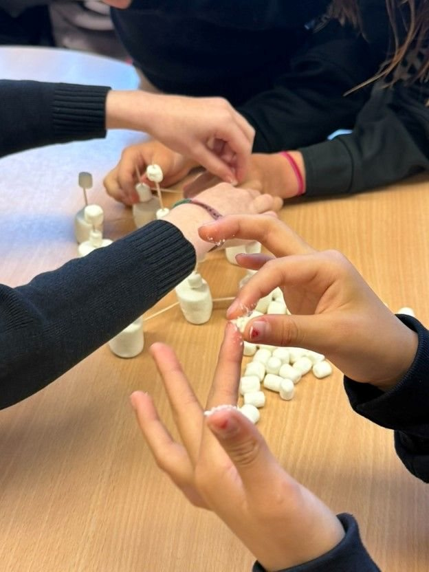
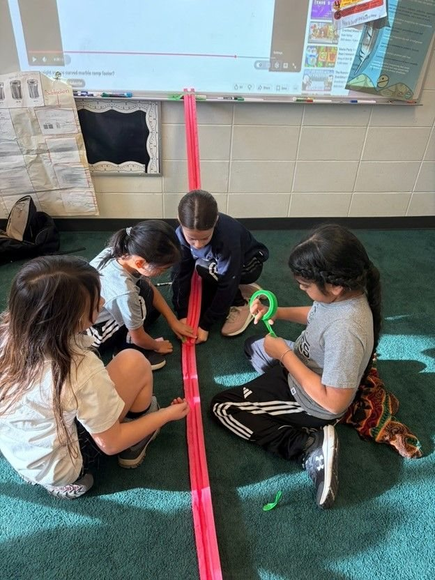
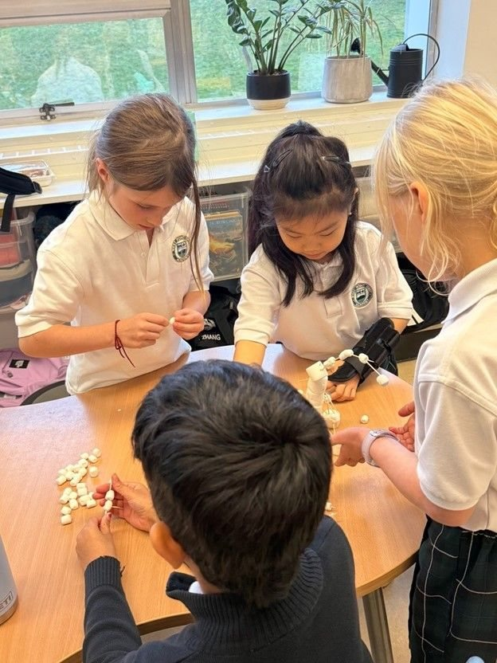

Every Thursday at lunch, grade 9 students teach grade 3 students to build things.
The DOT Initiative is a student-run STEM program in Vancouver. We started with one club at one school. We are now running in three.

Twenty-five Thursdays since November, at West Point Grey Academy. The open circle is next week.
- 25+sessions run in our first year
- ~75grade 3 students reached
- 4grade 9 student leaders
- 3Vancouver schools in 2026–27
What actually happens in a session
One build per session, no lecture. Students work in small groups and test their own ideas. Our leaders run the room as facilitators — asking questions rather than giving answers — which turned out to be the part everyone liked most.
-
Pool-noodle marble coasters
Split pool noodles become track. Groups bank the curves, fight gravity, and work out for themselves whether a curved ramp gets the marble down faster than a straight one.
-
Marshmallow towers
Build the tallest structure that stays standing, using only marshmallows and toothpicks. Everyone discovers triangles the hard way, usually after a few collapses.
-
The cookie egg drop
A classic physics challenge, rebuilt around a cookie-based payload. Exactly as messy as it sounds, and the only session where eating your materials is a legitimate strategy.


Reviews from our grade 3s
Collected at the end of our first year, unedited.
-
It's been very fun and we get to use our brains to figure out challenges.
Zoey and Tiana, grade 3 -
I give it 5 stars because we get to build things and sometimes get prizes!
Boden, grade 3 -
It's been really fun — we test different strategies and try until we get it right. It's ok to not get it right, we just do our best.
Bella and Maclaine, grade 3
Why a lunchtime club matters
Most Canadian students stop taking science long before anyone asks them to choose a career. By the time the choice arrives, it has usually already been made for them.
- 3%of Canadian students complete Grade 12 computer science.
- 15%complete Grade 12 physics. Chemistry is 25%, biology 22%.
- >50%graduate high school without the senior math or science credits required to enter a university STEM program.
Figures from Spotlight on Science Learning: Snapshot of a Decade, Let's Talk Science with Amgen Canada, 2022. We work with grade 3s because interest in science is built or lost well before students pick their senior courses.
Where we run
Every session is free to the school and to families. We bring all materials.
- West Point Grey AcademySince November — 25+ sessions
- St. John's SchoolNew for 2026–27
- Crofton House SchoolNew for 2026–27
Beyond the weekly club
The club is our largest program, but not the only one.
-
An interview podcast about what STEM careers actually look like day to day, hosted by Teresa Pan and Leo van Jaarsveld. Guests so far include a professor emeritus of atmospheric science at UBC and a retired civil engineer. Listen on Spotify.
-
The Centrifuge
Our partner magazine, publishing student-written STEM research and writing. Four issues out so far.
Get involved
We are looking for schools and community spaces that want a free hands-on STEM session, students who want to lead one, and sponsors who can cover materials. A single session costs about $20 to run for a class of 24.